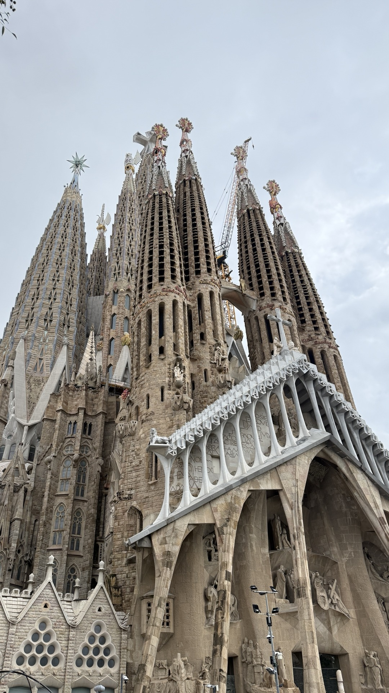

Barcelona · la Sagrada Família
¿Y si tus viajesempiezan a sonar así?
 travelsnomad.com
travelsnomad.comY tú eliges quiénte la cuenta.
Kore
Puck
Charon
Audioguía · Fachada de la Pasión
Gaudí la dibujó en 1911, enfermo en Puigcerdà y convencido de que se moría. Quería que diera miedo.
Fíjate en los soldados romanos: sus cascos son las chimeneas de La Pedrera.
Y junto a la Verónica, ese hombre que toma notas es el propio Gaudí.
Cada parada, con su audioguía.
Con su dato curioso.
Y le preguntas lo que quieras.
Lista de espera abierta
Muy pronto.
Tu primer viaje por 1,99 €*
*Si te apuntas a la lista de espera en travelsnomad.com